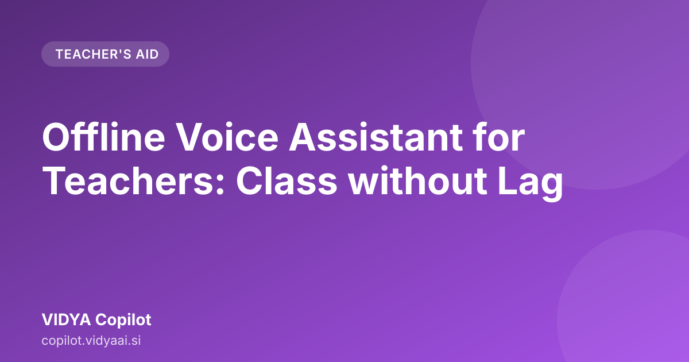

Offline Voice Assistant for Teachers: Class without Lag

Teaching in the fast-paced world of modern education, connectivity issues can often disrupt the flow of teaching. For educators in Maharashtra, who manage diverse classrooms and schedules, having a reliable offline voice assistant for teachers is becoming a necessity. This tool ensures that your preparation and classroom activities run smoothly, even when the internet is down.
Why Offline Tools Matter for Modern Maharashtra Classrooms
Teaching in Maharashtra involves dealing with varied infrastructural conditions. Sometimes, in rural areas or during peak usage times, internet speed slows down or drops entirely. When your lesson plan, activity ideas, or worksheet generation depends on a constant, strong Wi-Fi signal, you risk losing valuable teaching time.
The Reality of Connectivity in Schools
Many schools, especially in smaller towns or remote villages, face inconsistent internet access. Relying on cloud-based tools means your entire preparation hinges on a stable connection. This dependency adds unnecessary stress to a teacher's day.
Consider the scenario: you have a crucial science experiment planned for the next period. If you need to pull up a complex procedure or generate a related worksheet online, and the connection fails mid-task, teaching momentum is lost.
Moving Beyond Digital Dependency
The shift towards digital tools is positive, but it must be practical. A tool that works reliably, regardless of network status, is a productivity booster. Offline tools empower educators to maintain high-quality instruction consistently. They bring the power of advanced technology directly onto your device, ready for use at any time.
What is an Offline Voice Assistant for Teachers?
An offline voice assistant for teachers is a sophisticated application that runs entirely on your local device. It utilizes advanced processing capabilities to understand your spoken requests, generate educational content, and assist with classroom management without needing to communicate with remote servers.
How Does "Offline" Work in Practice?
Unlike typical AI assistants that require constant cloud communication to process queries, an offline assistant has the necessary models and databases stored locally. When you speak to it, the processing happens right there on your device. This means:
- Instant Response: There is no waiting for a server to respond.
- No Data Usage: It does not consume your mobile data plan.
- Guaranteed Functionality: As long as your device is powered on, the tool works.
Understanding the Voice Component
The "voice" part of the assistant is key for teachers. Instead of typing out complex prompts—such as, "Generate a 10-mark MCQ set on the concept of photosynthesis suitable for 9th standard students in Marathi medium"—you simply speak it. This hands-free interaction is perfect when you are multitasking, preparing materials, or during a brief break in class.
How VIDYA Copilot Helps with Lesson Planning Offline
Lesson planning is a time-intensive part of a teacher's job. It requires creativity, adherence to curriculum standards, and careful structuring. A dedicated offline tool can drastically reduce the time spent staring at a blank screen.
Structuring Your Lesson Flow
You can dictate your topic and grade level to the assistant. For example, you could say, "Plan a 45-minute lesson on the Mughal Empire for Class 8." The assistant processes this request locally and provides a structured outline.
This outline typically includes:
- Introduction points (hooks for students).
- Core concepts to cover.
- Time allocation for each segment.
- Suggested activities or discussion starters.
Tailoring Content to Local Needs
The assistant can be guided to align with the specific requirements of the Maharashtra State Board curriculum. You can ask it to focus on specific historical events or scientific principles as per the syllabus. This ensures that the generated plan is immediately usable in your classroom.
Generating Worksheets and Activities Without Internet Access
Once the lesson plan is set, the next hurdle is creating engaging materials. Worksheets, quizzes, and group activities are essential for reinforcing learning, but designing them takes significant effort.
Instant Worksheet Generation
Imagine you need a quick assessment after teaching a chapter on fractions. Instead of opening a document, switching to a generator, and hoping the connection holds, you can use your offline lesson planning tools. You can verbally request: "Create five fill-in-the-blanks questions based on the topic of fractions, suitable for Class 6." The assistant generates the questions instantly, ready for you to copy or review.
Developing Diverse Classroom Activities
Learning happens best through doing. An offline voice assistant can brainstorm diverse activities tailored to your available resources.
- For Science: "Suggest a simple, low-cost demonstration for gravity using household items."
- For Social Studies: "Give me a role-play scenario for students to act out the concepts of democracy."
These suggestions are generated locally, meaning you get creative prompts even if your school Wi-Fi is down. This makes it an excellent classroom prep offline solution.
The Practical Benefits: Focus on Teaching, Not Tech Issues
The true value of an offline voice assistant for teachers is not just about generating content; it is about reclaiming your time and reducing daily professional stress.
Saving Precious Time
Time saved in preparation is time reinvested into students. Instead of spending an hour searching for a suitable activity online, you can spend that hour perfecting your delivery or interacting with students during the lesson.
Consistency Across All Environments
Whether you are teaching in a high-tech private school or a resource-constrained government school, the quality of your preparation remains consistent. The technology adapts to the environment, not the other way around. This reliability is crucial for maintaining high teaching standards across different settings in Maharashtra.
Seamless Integration of AI for Teachers Without Internet
This is where the modern capability shines. The assistant acts as a powerful form of AI for teachers without internet. It handles the heavy lifting of content creation—drafting, structuring, and formatting—allowing you, the expert educator, to focus solely on pedagogy and student engagement.
Here is a quick checklist of what you can achieve offline:
| Task | Before Offline Assistant | With Offline Assistant |
|---|---|---|
| Lesson Structure | Manual drafting, searching online | Voice command, instant outline generation |
| Worksheet Creation | Manual design, searching for templates | Verbal request, instant generation of questions |
| Activity Brainstorming | Relying on memory or external resources | Instant, context-aware suggestions |
| Preparation Time | High dependency on stable internet | Consistent performance regardless of network |
Ready to Experience Uninterrupted Teaching? Meet VIDYA Copilot
The need for reliable, powerful, and accessible tools is clear. For teachers in Maharashtra who demand high-quality preparation without the anxiety of connectivity, there is a dedicated solution.
We have designed VIDYA Copilot specifically to meet the unique needs of Indian educators. It is built to be robust, intelligent, and entirely self-sufficient in its operation. It brings the power of advanced AI directly to your device, ensuring that your focus remains where it belongs: on your students and on excellent teaching.
You can explore how this technology works and see the capabilities firsthand by visiting Meet VIDYA Copilot. Discover how an offline voice assistant for teachers can transform your daily routine from stressful to seamless.
Further reading across our network: AskShiva · Indian Labor Law Compliance: A Practical HR Roadmap
Conclusion
The future of education is not about chasing the fastest internet; it is about ensuring that quality education is accessible everywhere. By adopting an offline voice assistant for teachers, you are choosing reliability, efficiency, and peace of mind. VIDYA Copilot empowers you to walk into every class fully prepared, confident, and ready to inspire, no matter the network status.
Frequently asked questions
Can an offline voice assistant help with the Maharashtra curriculum?
Yes, tools like VIDYA Copilot are designed to assist teachers with content creation and lesson structuring based on educational needs, even when you are completely offline.
What happens if my internet connection is slow while using this tool?
Since the core functionality of VIDYA Copilot operates offline, slow or absent internet connection will not interrupt your lesson planning or the use of its features in the classroom.
What is an offline voice assistant for teachers?
An offline voice assistant is an application that runs entirely on your local device. It uses advanced processing to generate lesson plans and worksheets based on your spoken requests, even without an internet connection.
How does an offline tool benefit teachers in Maharashtra?
It ensures teaching momentum is never lost due to slow or dropped Wi-Fi. These tools provide instant response times and do not consume mobile data, making them reliable for all school environments.